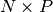
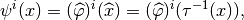

The FEM description in GetFEM++¶
The aim of this section is to briefly introduce the FEM description in GetFEM++ mainly in order to fix the notation used in the rest of the document (definition of element, reference element, geometric transformation, gradient of the geometric transformation ...).
Convex structures¶
Finite element methods are defined on small convex domains called elements. The simplest element on which a finite element method can be defined is a segment (simplex of dimension 1), other possibilities are triangles, tetrahedrons (simplices of dimension 2 and 3), prisms, parallelepiped, etc. In GetFEM++, a type of element (for us, a convex) is described by the object bgeot::convex_structure defined in the file bgeot_convex_structure.h.
It describes only the structure of the convex not the coordinates of the vertices. This structure is not to be manipulated by itself, because it is not necessary that more than one structure of this type describe the same type of convex. What will be manipulated is a pointer on such a descriptor which has to be declared with the type bgeot::pconvex_structure
The following functions give a pointer onto the descriptor of the usual type of elements:
- bgeot::simplex_structure(dim_type d)¶
description of a simplex of dimension d.
- bgeot::parallelepiped_structure(dim_type d)¶
description of a parallelepiped of dimension d.
- bgeot::convex_product_structure(bgeot::pconvex_structure p1, bgeot::pconv$
description of the direct product of p1 and p2.
- bgeot::prism_P1_structure(dim_type d)¶
description of a prism of dimension d
For instance if one needs the description of a square, one can call equivalently:
p = bgeot::parallelepiped_structure(2);
or:
p = bgeot::convex_product_structure(bgeot::simplex_structure(1),
bgeot::simplex_structure(1));
The descriptor contains in particular the number of faces (p->nb_faces()), the dimension of the convex (p->dim()), for the number of vertices (p->nb_points()). Other information is the number of vertices of each face, the description of a face and the eventual reference to a more basic description (used for the description of geometric transformations).
{kind=link}
Convexes of reference¶
A convex of reference is a particular real element, i.e. a structure of convex with a list of vertices. It describes the particular element from which a finite element method is defined. In the file bgeot_convex_ref.h the object bgeot::convex_of_reference makes this description. The library keeps only one description for each type of convex. So what will be manipulated is a pointer of type bgeot::pconvex_ref on the descriptor.
The following functions build the descriptions:
- bgeot::simplex_of_reference(dim_type d)¶
description of the simplex of reference of dimension d.
- bgeot::simplex_of_reference(dim_type d, short_type k)
description of the simplex of reference of dimension d with degree k Lagrange grid.
- bgeot::convex_ref_product(pconvex_ref a, pconvex_ref b)¶
description of the direct product of two convexes of reference.
- bgeot::parallelepiped_of_reference(dim_type d)¶
description of the parallelepiped of reference of dimension d.
The vertices correspond to the classical vertices for such reference element. For
instance the vertices for the triangle are  , and
. It corresponds to the configuration shown in Figure
usual elements
, and
. It corresponds to the configuration shown in Figure
usual elements
If p is of type bgeot::pconvex_ref then p->structure() is the corresponding convex structure. Thus for instance p->structure()->nb_points() gives the number of vertices. The function p->points() give the array of vertices and p->points()[0] is the first vertex. The function p->is_in(const base_node &pt) return a real which is negative or null if the point pt is in the element. The function p->is_in_face(short_type f, const base_node &pt) return a real which is null if the point pt is in the face f of the element. Other functions can be found in bgeot_convex_ref.h and bgeot_convex.h.
Shape function type¶
Most of the time the shape functions of finite element methods are polynomials, at least on the convex of reference. But, the possibility is given to have other types of elements. It is possible to define other kind of base functions such as piecewise polynomials, interpolant wavelets, etc.
To be used by the finite element description, a shape function type must be able to be evaluated on a point (a = F.eval(pt), where pt is a base_node) and must have a method to compute the derivtive with respect to the ith variable (F.derivative(i)).
For the moment, only polynomials and piecewise polynomials are defined in the files bgeot_poly.h and bgeot_poly_composite.h.
Geometric transformations¶
{kind=link}
A geometric transformation is a polynomial application:
which maps the reference element  to the real element
to the real element  . The
geometric nodes are denoted:
. The
geometric nodes are denoted:
The geometric transformation is described thanks to a components polynomial vector (In fact, as an extention, non polynomial geometric transformation can also be supported by GetFEM++, but this is very rarely used)
such that
Denoting
the matrix containing of all the geometric nodes, one has
The derivative of  is then
is then
where is a  matrix and a matrix. The (transposed) pseudo-inverse of is a matrix denoted :
Of course, when  , one has .
, one has .
Pointers on a descriptor of a geometric transformation can be obtained by the following function defined in the file bgeot_geometric_trans.h:
bgeot::pgeometric_trans pgt = bgeot::geometric_trans_descriptor("name of trans");
where "name of trans" can be chosen among the following list.
"GT_PK(n,k)"
Description of the simplex transformation of dimension n and degree k (Most of the time, the degree 1 is used).
"GT_QK(n,k)"
Description of the parallelepiped transformation of dimension n and degree k.
"GT_PRISM(n,k)"
Description of the prism transformation of dimension n and degree k.
"GT_PRODUCT(a,b)"
Description of the direct product of the two transformations a and b.
"GT_LINEAR_PRODUCT(a,b)"
Description of the direct product of the two transformations a and b keeping a linear transformation (this is a restriction of he previous function). This allows, for instance, to use exact integrations on regular meshes with parallelograms.
Finite element methods description¶
A finite element method is defined on a reference element by a set of nodes and corresponding base functions
Denoting

a supplementary linear transformation is allowed for the real base function
where  is a matrix possibly depending on the
geometric transformation (i.e. on the real element). For basic elements as
Lagrange elements this matrix is the identity matrix (it is simply ignored). In
this case, we will say that the element is -equivalent.
is a matrix possibly depending on the
geometric transformation (i.e. on the real element). For basic elements as
Lagrange elements this matrix is the identity matrix (it is simply ignored). In
this case, we will say that the element is -equivalent.
This approach allows to define hermite elements (Argyris for instance) in a generic way, even with non linear transformations (i.e. mainly for curved boundaries). We denote the matrix whose ith line is . Whis this notation, for a function is defined by
one has
where  is the vector whose ith component is .
is the vector whose ith component is .
A certain number of description of classical finite element method are defined in the file getfem_fem.h. See Appendix A. Finite element method list for an exhaustive list of available finite element methods.
A pointer to the finite element descriptor of a method is obtained using the function:
getfem::pfem pfe = getfem::fem_descriptor("name of method");
We refer to the file getfem_fem.cc for how to define a new finite element method.

目次
前のトピックへ
How to contribute / Git repository on Savannah
次のトピックへ
Description of the different parts of the library
Download
Main documentations
- GetFEM++ User documentation
- Python Interface
- Matlab Interface
- Scilab Interface
- Gmm++
- GetFEM++ project